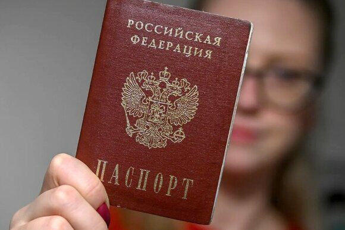

« Назад
Как заменить паспорт, находясь в другом городе или за границей в 2025

Независимо от того, находитесь ли вы в другом городе или оказались за границей, необходимость заменить паспорт может возникнуть внезапно – утеря, кража, износ или необходимость обновить данные. В данной статье мы подробно рассмотрим все аспекты замены паспорта не по месту регистрации в 2025 году. Расскажем, какие документы понадобятся, с какими государственными органами стоит взаимодействовать, какие нюансы следует учитывать и как избежать распространенных ошибок. Особое внимание уделим практическим советам и рекомендациям, а также ответим на часто задаваемые вопросы.
Почему важно знать правила замены паспорта
Получение нового паспорта является важной процедурой для обеспечения вашей идентификации, свободы передвижения и безопасности. Неожиданные ситуации, когда приходится заменить паспорт находитесь вдали от места постоянной прописки или даже за рубежом, требуют знания всех нюансов административных процедур. В 2025 году многие изменения коснутся как документов, так и протоколов обращения с государственными органами, поэтому важно быть в курсе актуальных правовых норм. В данной статье мы собрали самую актуальную информацию, которая поможет вам шаг за шагом пройти через все этапы замены паспорта.
Основные причины замены паспорта
Прежде чем погрузиться в подробное описание процедуры, стоит понять, почему может возникнуть необходимость замены паспорта вдали от места проживания:
Физическое повреждение паспорта или его износ
Современные паспорта, как правило, изготавливаются из специальных материалов, однако длительное использование, некорректное обращение или аварийное воздействие (например, попадание в воду или пожар) может сделать его использование невозможным.
Утрата или кража паспорта
Случается, что паспорт оказывается в чужих руках или оказывается утерянным во время путешествий. В таких случаях замена паспорта является обязательной процедурой для обеспечения вашей безопасности.
Изменение личных данных
Иногда в паспорте требуется внести исправления – изменение фамилии, ошибок в данных или корректировка фотографий. Эти изменения могут стать причиной необходимости получения нового документа, особенно если произошли изменения после вашего переезда или обновления информации.
Какие документы понадобятся для замены паспорта
Замена паспорта вдали от места постоянной регистрации или за рубежом требует подготовки ряда документов. Хотя список необходимых бумаг может незначительно варьироваться в зависимости от региона или страны пребывания, общим требованиям можно назвать следующие:
Заявление на замену паспорта
Это основной документ, заполненный в установленной форме. В заявлении следует указать причину замены, дать актуальные контактные данные и объяснить, почему вам необходимо оформить новый документ вдали от дома. Образец заявления можно получить в консульстве или на сайте МФЦ.
Действующий документ, удостоверяющий личность
Если вы подаете заявление в консульском учреждении за границей или через доверенное лицо в другом городе, потребуется предъявить другой удостоверяющий документ: водительское удостоверение, военный билет, либо внутренний паспорт, если он всё ещё действителен.
Документы, подтверждающие причину замены
При утрате или краже паспорта потребуется предоставить заявление в полицию или свидетельство о происшествии. Если паспорт физически поврежден, необходимо приложить фото/скан с указанием повреждений, что поможет ускорить рассмотрение дела.
Фотографии
Потребуется несколько фотографий соответствующего размера, сделанных по установленным стандартам. Следует обратить внимание на требования к качеству и фону фотографий.
Дополнительные документы (при необходимости)
В отдельных случаях могут потребоваться дополнительные документы. Например, при обновлении биометрических данных, подтверждение изменения фамилии (например, свидетельство о браке) или документы от работодателя в случае командировки.
Процедура замены паспорта в другом городе
Процесс замены паспорта в другом городе часто отличается от замены документа по месту регистрации. Вот пошаговая инструкция:
1. Узнайте о местном порядке оформления
Перед тем как отправляться в местный МФЦ или подразделение МВД, уточните процедуру замены паспорта для граждан, находящихся вне места прописки. Обратитесь на официальный сайт регионального ведомства или воспользуйтесь телефоном доверительной связи.
2. Сбор и предварительная проверка документов
Перед визитом в учреждение убедитесь, что у вас имеются все необходимые документы. Проверьте актуальность фотографий, корректность заполнения заявления. Важно также иметь при себе копии документов, если потребуется их предъявление или перевода.
3. Посещение МФЦ или местного отделения ГУВМ МВД
В назначенный день посетите учреждение. Если заявка оформляется через МФЦ, какое-либо предварительное бронирование времени может понадобиться. Обязательно уточните порядок оплаты государственной пошлины.
4. Оплата государственной пошлины
Замену паспорта сопровождает государственная пошлина. Оплата может производиться как наличными, так и через электронные системы.
5. Получение временного удостоверения личности
В некоторых случаях может возникнуть задержка в оформлении нового паспорта. Для временного использования может быть выдано удостоверение личности или справка, подтверждающая подачу документов.
6. Отслеживание статуса заявления
Современные системы позволяют отслеживать статус заявки онлайн. Регулярно проверяйте обновления, чтобы быть в курсе готовности паспорта. Некоторые госуслуги обеспечивают уведомления по СМС или электронной почте.
Замена паспорта за границей: пошаговая инструкция
Замена паспорта, находясь за рубежом, имеет свои особенности, связанные с принципами работы консульских учреждений. Вот пошаговая инструкция для тех, кто оказался вне страны:
1. Обращение в консульское учреждение
Сначала свяжитесь с ближайшим российским консульством или посольством. На официальном сайте МИД РФ или консульства доступны адреса, телефоны и режим работы. В некоторых странах учреждений несколько, поэтому уточните, в каком из них населён регион вашего пребывания.
2. Запись на приём
Из-за высокой загруженности консульских служб онлайн-запись часто является обязательным шагом. Заполните заявку и уточните, какие документы необходимо принести, а также в какие сроки оформляется замена паспорта.
3. Подача документов и оплата услуг
В консульстве вам потребуется предъявить полный пакет документов. Обратите внимание на то, что в некоторых случаях требуется апостиль или нотариальное заверение копий. Оплатить сборы можно в местной валюте, но обязательно уточняйте курс обмена, так как сумма может пересчитываться по текущему курсу.
4. Проверка биометрических данных
Современный российский паспорт содержит биометрическую информацию. В ряде стран консульства оснащены современным оборудованием для проверки и снятия биометрических данных, поэтому будьте готовы к процедуре регистрации отпечатков пальцев и фотографированию.
5. Временное удостоверение личности
До получения нового паспорта консульство может выдать временное удостоверение личности, которое позволит вам законно находиться за границей и совершать поездки.
6. Получение нового паспорта
В зависимости от загруженности консульства и особенностей местной администрации изготовление нового паспорта может занять от нескольких дней до нескольких недель. Обязательно уточняйте примерные сроки и возможность отслеживания заявки через официальный сайт консульства.
Советы и рекомендации для упрощения процедуры
Чтобы минимизировать стресс и ускорить процесс замены паспорта, полезно соблюдать следующие рекомендации:
1. Заранее изучите обновления законодательства
Государственные правила могут меняться. Регулярно ознакомляйтесь с актуальной информацией на официальных сайтах МВД, МИД и МФЦ, чтобы быть в курсе последних изменений.
2. Подготовьте заранее полный комплект документов
Если вы знаете, что предстоит замена паспорта или если располагаете информацией о вероятных изменениях (например, в случае утраты при путешествии), соберите документы заранее. Сделайте копии всех бумаг. Это поможет избежать паники, если ситуация возникнет неожиданно.
3. Используйте электронные сервисы
В 2025 году многие госуслуги доступны онлайн. Записывайтесь на приём, проверяйте статус заявления и оплачивайте сборы через литые интернет-платформы. Это позволит вам значительно сократить время и уменьшить бюрократические проволочки.
4. Планируйте поездку заблаговременно
Если вы знаете, что будете находиться вдали от места прописки длительный период, заранее улучшите возможность связи с консульством или МФЦ – изучите график работы учреждений, узнайте адреса отделений и спланируйте время визита.
5. Поддерживайте связь с родственниками или доверенными лицами
Если процедура замены паспорта затягивается, важно, чтобы у вас был контакт с людьми на родине, которые могли бы оказать помощь или проинформировать вас об изменениях в законодательстве.
6. Следите за обновлениями безопасности
При подаче документов за границей не передавайте оригиналы бумаг через ненадежные каналы связи. Всегда лично приносите свои документы в консульские учреждения и убедитесь, что ваши личные данные защищены.
Ошибки, которых стоит избегать
Опыт многих граждан помогает выявить ряд типичных ошибок, которые могут затруднить или задержать процедуру замены паспорта вдали от дома:
1. Неполный комплект документов
Самая частая ошибка – попытка подать заявление без всех необходимых бумаг. Перед визитом обязательно перепроверьте список документов, а также ознакомьтесь с требованиями учреждения.
2. Неверное заполнение заявления
Ошибки или опечатки в заявлении могут привести к дополнительным проверкам и задержкам. Если вы не уверены в правильности заполнения документов, воспользуйтесь консультацией сотрудников МФЦ или консульства.
3. Невнимание к срокам
Некоторые граждане недооценивают сроки изготовления нового паспорта. Важно не только узнать ориентировочное время ожидания, но и планировать поездки, если требуется временное удостоверение личность.
Часто задаваемые вопросы (FAQ)
Ниже приведены ответы на самые распространённые вопросы, которые возникают при замене паспорта вдали от места регистрации:
Можно ли заменить паспорт, если я нахожусь за границей?
Да, замена паспорта за границей осуществляется через консульство или посольство России. Вам необходимо обратиться в ближайшее представительство РФ, записаться на прием, предоставить полный комплект документов и пройти процедуру биометрической идентификации.
Какие сроки изготовления нового паспорта за границей?
Срок изготовления паспорта за границей варьируется в зависимости от загруженности консульства. В большинстве случаев ожидание составляет от 10 дней до нескольких недель. Если вам нужно срочное удостоверение, уточните возможность получения временного документа.
Что делать, если утратил паспорт за границей?
В случае утери или кражи паспорта за границей, первым делом обратитесь в местное отделение полиции для составления протокола. Затем обратитесь в консульство РФ для подачи заявления на замену паспорта. Не забудьте сохранить копии всех документов и протокола полиции.
Могу ли я подать документы на замену паспорта дистанционно?
В некоторых случаях граждане могут воспользоваться доверенным лицом или онлайн-сервисами для подачи документов. Однако личное присутствие часто требуется для прохождения биометрических процедур. Точный порядок зависит от региона или страны, поэтому лучше заранее уточнить на официальном сайте МИД или консульства.
Что делать, если мой паспорт был поврежден, но еще действителен?
Даже если паспорт ещё действителен, но физически поврежден, рекомендуется подать заявление на замену, чтобы избежать проблем при пересечении границы или при идентификации. Подготовьте фотографии повреждений и все необходимые документы, чтобы ускорить процесс рассмотрения вашего заявления.
Нужно ли брать оригиналы всех документов при замене паспорта вдали от дома?
Да, оригиналы документов, удостоверяющих личность и подтверждающих необходимость замены, обязательны. При этом рекомендуется иметь копии для личного архива. Если вы планируете направлять документы через доверенное лицо, проконсультируйтесь о порядке заверения копий.
Как отслеживать статус заявления на замену паспорта?
Современные государственные услуги предлагают онлайн-отслеживание заявлений. Вы можете проверять статус через соответствующий портал госуслуг, мобильное приложение или получать уведомления по электронной почте и СМС.
Практические советы для успешного прохождения процедуры
Чтобы избежать неприятных сюрпризов и задержек, следуйте этим практическим рекомендациям:
Планируйте заранее
Если вы знаете, что предстоит длительное пребывание вне дома, не откладывайте сбор документов на последний момент.
Организуйте документы
Сохраняйте оригиналы вместе с копиями и фотографиями – это позволит быстрее реагировать в экстренных ситуациях.
Будьте внимательны к деталям
Проверьте заполненность всех форм, подкрепляйте заявление дополнительными документами, если это требуется.
Следите за сроками действия документов
Если вы пользуетесь старым паспортом для идентификации, вовремя обновляйте его, чтобы избежать проблем при пересечении границы.
Не стесняйтесь задавать вопросы сотрудникам государственных учреждений
Консультанты могут дать полезные рекомендации и помочь с оформлением документов.
Заключение
Замена паспорта не по месту прописки, будь то в другом городе или за границей, является процедурой, требующей подготовки, внимания к деталям и знания актуальных правил. В 2025 году, когда технологии играют важную роль в предоставлении государственных услуг, процесс становится более прозрачным и доступным для граждан. Главное – заранее собирать все необходимые документы, внимательно изучать требования и не бояться обращаться за помощью, если возникают вопросы.
Обратите внимание на следующие ключевые моменты:
- Осуществляйте онлайн-запись и следите за статусом вашего заявления через официальные порталы.
- Предоставляйте полный комплект оригиналов документов и копии, если требуется.
- В случае обращения в консульство за границей, заранее уточняйте режим работы, список необходимых документов, особенности биометрической регистрации и сроки изготовления.
- Пользуйтесь современными технологиями для ускорения и упрощения процедуры – это значительно сэкономит ваше время и нервы.
Срочная замена паспорта гражданина РФ – оперативно, надежно, без лишних хлопот!
Нужна срочная замена паспорта гражданина РФ? Мы поможем! В Паспортно-визовом центре «Север» мы оказываем профессиональную помощь в оформлении документов в кратчайшие сроки – ведь время важно! Наша команда экспертов с опытом более 25 лет всегда готова взять на себя решение всех бюрократических вопросов.
Почему выбирают нас?
Надежность и оперативность
За годы работы мы выработали эффективные схемы оформления, позволяющие решать вопрос замены паспорта в самые сжатые сроки.
Индивидуальный подход
Каждый клиент для нас – приоритет. Мы поможем собрать необходимый пакет документов, проконсультируем по процедурам и проведем через все этапы замены.
Расположение в центре Москвы
Наш офис удобно расположен, что делает посещение максимально комфортным и экономит ваше время.
Полная поддержка на каждом этапе
От первой консультации до получения нового паспорта – мы всегда рядом, чтобы ответить на ваши вопросы и помочь с оформлением.
Гарантия конфиденциальности и безопасности работы
Мы ценим доверие клиентов, поэтому все операции проводятся с соблюдением строгих стандартов.
Когда каждый день на счету, выбирайте Паспортно-визовый центр «Север»! Позвоните нам по телефону +79255854195 и получите оперативную помощь от команды профессионалов.
|